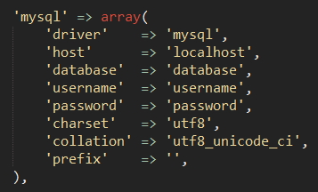
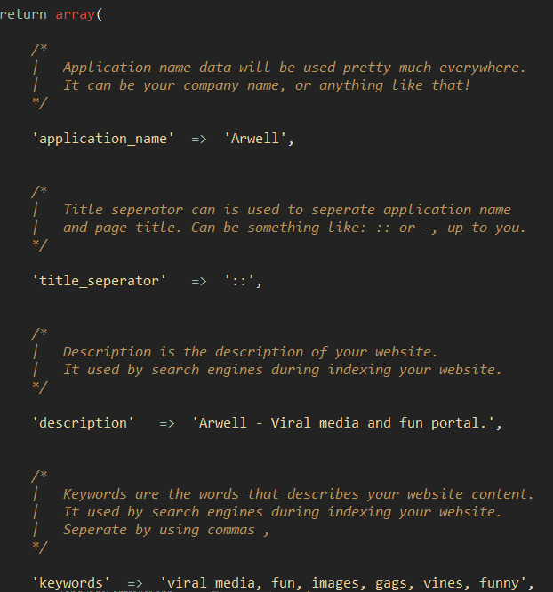
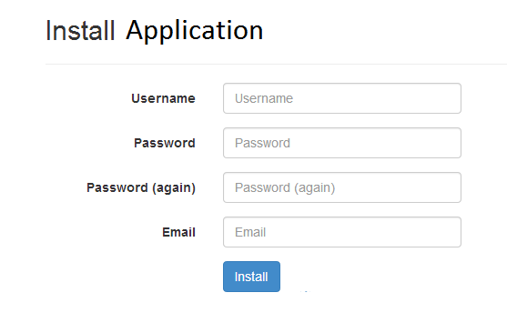
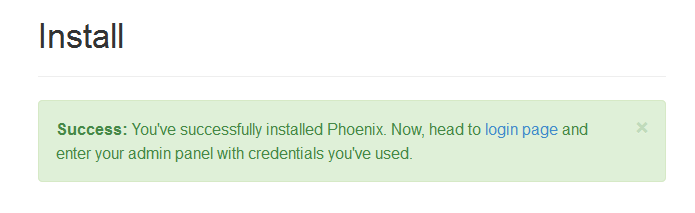
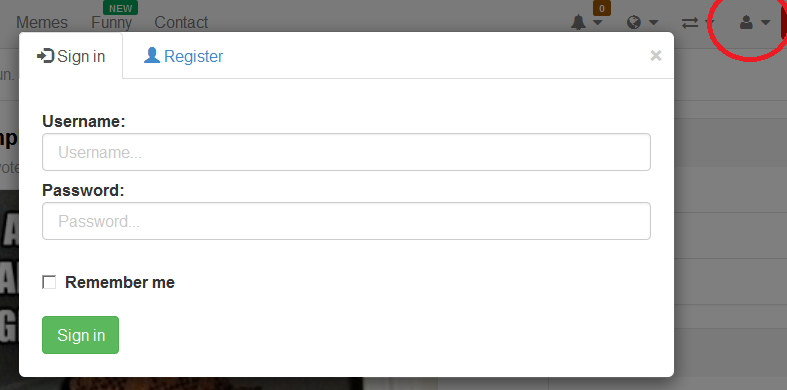
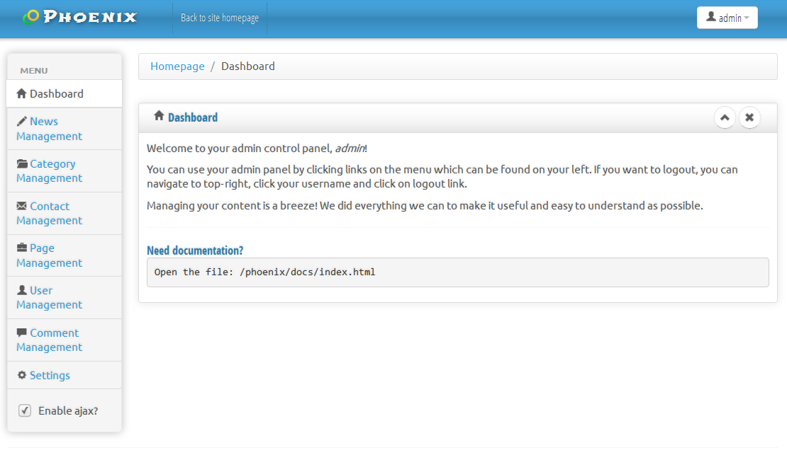

Çıkış tarihi: 10/01/2014
Yer: Kastamonu
Geliştirici: Anıl ÜNAL
Email: iamaristona@gmail.com
Merhaba! Arwell'i satın aldığınız için teşekkür ederim. Eğer bu dökümantasyonun kapsamı dışında sorularınız olursa, bana email adresimden veya buradaki iletişim formundan ulaşabilirsiniz.
Merhaba! Arwell'i satın aldığınız için teşekkür ederim. Eğer bu dökümantasyonun kapsamı dışında sorularınız olursa, bana email adresimden veya buradaki iletişim formundan ulaşabilirsiniz.
Arwell, arkayüzde son derece güçlü bir PHP frameworkü olan Laravel 4 üzerine kurulmuştur. Önyüzde ise tasarım ve responsiveness için Bootstrap 3 ve scriptler için Query kullanılmıştır. Yönetici paneli ise açık kaynaklı olan Charisma teması ile geliştirilmiştir.
Arwell ile birçok veritabanını kullanabilirsiniz, ancak hostinglerde standart olarak MySQL kullanıldığı için, öntanımlı olarak MySQL kullanılmıştır. Eğer MySQL'den başka bir veritabanı kullanacaksanız (örn PostgreSQL) bunu konfigürasyonu değiştirerek kolayca yapabilirsiniz.
Başlamadan önce size Arwell'nın klasör yapısı hakkında bilgi vermek istiyorum.
app: Bu klasörde Arwell'nın arkayüz kodları bulunmaktadır.
app/config: Bu klasörde konfigürasyon dosyaları bulunmaktadır.
bootstrap: Laravel tarafından kullanılan klasör.
vendor: Uygulamanın ihtiyacı olan kütüphaneler bu klasördedir.
assets/home: Arwell tasarımı için kullanılan önyüz materyallerini barındırmaktadır.
assets/admin: Admin paneli tasarımı için kullanılan önyüz materyallerini barındırmaktadır.
uploads: Sisteme yüklediğiniz herşey burada tutulacaktır.
docs: Uygulamanın dökümantasyonu bu klasördedir.
workbench: Benim kişisel komponentlerim burada bulunmaktadır.
Anasayfadaki dosyalar sizin için pek anlam ifade etmiyor. Onları birçoğu Arwell'i geliştirirken kullandığım uygulamaların konfigürasyon dosyaları ve tamamen zararsızdır. (Not: Hiçbirşeyi silmeyin, yoksa uygulama düzgün çalışmayabilir.)
Bu dökümantasyon yazıldığı sırada örnek Arwell projesi bu adreste bulunmaktadır. Deneyebilirsiniz!
Arwell'in çalışması için aşağıdakiler gerekmektedir:
Yama 1.6
Yama 1.5
Yama 1.4.2
Yama 1.4.1
Yama 1.4
Eski yamalar
Güncelleme
Lütfen `/docs/updating` klasörünü açın. Her versiyon için güncelleme talimatlarını orada bulabilirsiniz.Öncelikle `app/config/database.php` dosyasını bir yazı editörü ile açın. (örn. Notepad) Bu satırı bulun:
Buradaki bilgileri veritabanınızın bilgileriyle uyuşacak şekilde doldurun. Sadece sağdaki değerleri değiştirin ve tek tırnaklarla virgülü bozmamaya özen gösterin. host, database, username and password değerlerini değiştirmeniz yeterlidir.
Şimdi, `app/config/site.php` dosyasını açın.

Application name uygulamanızın adıdır. Buraya uygulamanızın adı olarak şirket adınızı vb. girebilirsiniz.
Title seperator tarayıcınızın en üstündeki, uygulama adı ile sayfayı ayıran ayraçtır. :: olarak kalabilir, veya isterseniz | yada - gibi sembolleri de kullanabilirsiniz.
Description sitenizin açıklamasıdır. Bu açıklama arama motorları tarafından sitenizin ne olduğunu anlamak için kullanılacaktır. Kısa ve öz olarak websitenizi burada tanıtın.
Keywords, Google gibi arama motorlarının sitenizi indexlemek için kullanacağı kelimelerdir. Buradaki kelimeleri virgülle ayırabilirsiniz. Örneğin, "resimler, komik resimler, vine videoları" şeklinde kullanabilirsiniz.
Son olarak, app/routes.php dosyasını açın, ve üst kısımda aşağıdaki kod parçacığını bulun.
App::setLocale(Session::get('lang', 'en'));
Buradaki en ifadesini, tr olarak değiştirip kaydedin. (küçük harflerle yazılmak zorunda) Böylece kurulum aşamasında Türkçe Yükleyici'yi kullanabilirsiniz.
Şuana kadar herşeyi doğru yaptıysanız artık yükleyiciyi çalıştırabiliriz. Sitenize girmeye çalışın, aşağıdaki sayfa sizi karşılıyor olacak.
Yönetici bilgilerinizi girin ve yükle butonuna tıklayın. Aşağıdaki sayfayı gördüyseniz (yazılar farklı olabilir ama yeşil bir kutucuk olmalı)
herşeyi doğru yaptınız ve Arwell'i kurdunuz demektir. Ancak yapmamız gereken daha birçok şey var.
Facebook ile bağlan özelliğini kullanmak istiyorsanız, kendinize https://developers.facebook.com adresinde bir uygulama açmalısınız. Uygulamanızı oluşturmak için aşağıdaki adımları izleyin. (Facebook ile bağlan kullanmak istemiyorsanız bu adımı atlayın.)
En zevkli yere geldik! Artık uygulamamız kurulduğuna göre kullanmaya başlayabiliriz. Kahvenizden bir yudum alın ve 3. bölüme geçin!
Sitenize girdikten sonra, sağ üstte bulunan kullanıcı ikonuna tıklayın ve daha sonra giriş butonuna tıklayın.
Biraz önce admin panelinde girdiğiniz bilgilerinizle giriş yapmayı deneyin. Giriş yapıldıysa, tekrar kullanıcı ikonuna tıklayın ve tıkladığınızda "Yönetici" linkine tıklayın. Sizi bu sayfaya atacak:
Burası sizin yönetici panelinizdir ve Arwell'in yönetici panelini kullanmak çocuk oyuncağıdır! Şimdi yönetici panelinde neler yapabileceğinizden bahsedelim.
`Siteye geri dön.` butonu sizi siteye geri döndürür. Sağ üstteki `kullanıcıadınız` butonuna tıklayarak çıkış yapabilir veya profil bilgilerinizi güncelleyebilirsiniz. Soldaki menü ise yapabileceğiniz işlemleri göstermektedir. Zamanınızın büyük bir kısmını burada harcayacaksınız.
Bu bölümde paylaşımları yönetebilirsiniz. Paylaşımları popüler kısmına taşıyabilir, gizleyebilir veya silebilirsiniz.
Her paylaşım bir kategoriye eklenmek zorundadır. Bu yüzden bu bölümde kategorilerinizi oluşturabilirsiniz.
Burada ziyaretçilerinizin iletişim sayfasından gönderdiği mesajları bulabilirsiniz.
Bu bölümde sayfa oluşturabilir ve isterseniz HTML, isterseniz editörü kullanarak sayfalar oluşturabilirsiniz.
Bu bölümde kullanıcılarınızı yönetebilirsiniz. Birine `Yönetici` yetkisi vermak veya onları `Yasaklamak` için burayı kullanın. Ayrıca burada kendiniz de üyelik oluşturabilirsiniz. Kayıt olmayı kapattığınız takdirde üyelikleri buradan açabilirsiniz.
Widgetler öntanımlı olarak sitenin sağındaki menüye eklenir. Widgetler HTML, resim, gif, swf (flash) ve adsense kodlarını destekler. Bu menüyü kullanarak istediğiniz gibi widget oluşturabilirsiniz.
Bu bölümde paylaşımlara yapılan yorumları yönetebilirsiniz. Onayla, onayı kaldır, sil ve tümünü onayla gibi araçları kullanabilirsiniz.
Onaylarla kendiniz uğraşmak istemiyorsanız, Ayar Yönetimi sayfasındaki Yorumları otomatik onayla seçeneğini açıp yorumların otomatik olarak onaylanmasını sağlayabilirsiniz.
Burada uygulamanın tüm ayarlarını değiştirebilir ve logonuzu güncelleyebilirsiniz.
Arwell'de 4 tane yetki bulunmaktadır.
Ziyaretçi: Üyeliği olmayan ziyaretçiler.
Kullanıcı: Kullanıcılar
Yönetici: Yöneticiler
Yasaklı: Yasaklılar
Her güncelleme app/docs/updating klasörü altına bir versiyon.txt dosyasıyla gelir. Güncelleme talimatları için bunları okumalısınız.
Umarım Arwell'i beğenirsiniz!
Hertürlü görüş, öneri, hata raporu, hatta merhaba demek için bile bana email atabilirsiniz.
Anıl ÜNAL, Arwell uygulaması geliştiricisi